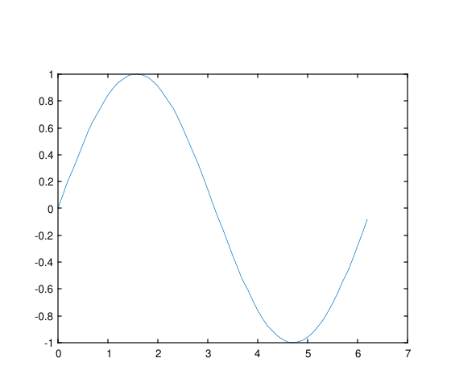

Ce document est la référence canonique pour la création de fichiers XML d'aide utilisés par Nelson. Il explique la structure requise par nelson_help.xsd et comment nelson_html.xslt transforme chaque élément en HTML. Utilisez ce fichier comme modèle et liste de contrôle lors de la création ou de la révision de pages de documentation.
`<xmldoc>` (root) - Enfant OBLIGATOIRE : `<language>`
Header: `<title>`, `<language>`, `<module_name>`, `<chapter>`, `<short_description>`
Sections: `<syntax>`, `<param_input>`, `<param_output>`, `<description>`, `<examples>`, `<see_also>`, `<history>`, `<authors>`, `<bibliography>`
| Paramètre | Description |
|---|---|
| language |
Localisation utilisée par le XSLT pour sélectionner les étiquettes et le texte localisé. Exemples : |
| keyword |
Identifiant principal affiché comme titre de la page par le XSLT. En cas d'absence, le XSLT revient à |
| Paramètre | Description |
|---|---|
| html |
Le XSLT génère un fichier HTML en utilisant des ressources locales : |
Une référence lisible par l'homme et un ensemble d'exemples définitifs décrivant le format de fichier XML d'aide défini par nelson_help.xsd, et comment nelson_html.xslt transforme ses éléments en HTML.
Utilisez `<description>` pour fournir le corps principal de la documentation. Il accepte des paragraphes (`<p>`), des listes (`<ul>`, `<ol>`), des tableaux (`<table>`), des balisages en ligne (`<b>`, `<i>`, `<code>`), des images (`<img src="..."/>`) et LaTeX (`<latex>`).
Les éléments en ligne et leur rendu XSLT :
{module}name, il devient../module/name.html, sinonname.html.`$$...$$`).ext:copy_img(@src); les SVG sont rendus avec un cadre fixe large et les autres formats sont adaptables.Éléments de bloc :
`<ul>` et `<ol>` - listes. Utilisez `<li>` avec un balisage en ligne/de bloc imbriqué selon les besoins.`<table>` - utilisez `<thead>`, `<tbody>`, `<tr>`, `<th>` et `<td>`. Le XSD autorise les attributs communs border, cellpadding et cellspacing.Conseils pour la rédaction :
`<short_description>`.`<examples>`en utilisant`<example_item_data>`et définissezrunnable="cli"
si applicable ourunnable="false"
(par défaut).`<link linkend="{module}name"
>`pour les références qualifiées par module ; sinon, utilisez des noms simples.Prise en charge des sous-chapitres - Le système d'aide de Nelson prend en charge les sous-chapitres imbriqués. Pour en ajouter un :
plots).chapter.xml contenant au minimum `<language>` et `<chapter>`, et éventuellement `<chapter_description>`.mesh.xml) dans le sous-répertoire ; les fichiers de sujet utilisent les éléments habituels comme `<keyword>` et `<short_description>`.`<link linkend="plots/mesh"
>mesh</link>`, pour des liens inter-modules utilisez `<link linkend="{module}plots/mesh"
>mesh</link>`.L'outil buildhelp et le XSLT résolvent ces chemins et généreront des pages HTML imbriquées (par exemple plots/mesh.html).
% Exemple simple
x = rand(1,10);
[y, info] = myfunc(x);
disp(info);
<?xml version="1.0" encoding="UTF-8"?>
<xmldoc>
<language>en_US</language>
<chapter>Plots</chapter>
<chapter_description>
<p>Plotting functions grouped in a subchapter.</p>
</chapter_description>
</xmldoc>% Générer un graphique et l'enregistrer au format SVG
x = 0:0.1:2*pi;
y = sin(x);
plot(x,y);
saveas(gcf(), [tempdir(),'example_plot.svg']);

| Version | Description |
|---|---|
| 1.15.0 | version initiale |
| 1.17.0 | ajout du support des sous-chapitres |